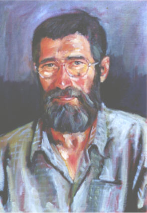

|
Musée Nicolas Poussin
Programme
- Conférence débat sur le thème de la
technique
- Réalisation d'un portrait devant public
Au MUSEE NICOLAS POUSSIN |
|
La Ferme de La Godinière
27410
Le Noyer en Ouche
La nouvelle adresse de notre site :
http://pagesperso-orange.fr/lagodiniere27/
dernière mise à jour de cette page : 06.10.2009

Portrait de René LESUR
Réalisé sur toile en trois séances par
José Gonçalves - Portraitiste
Peintre résidant à Gouttières - 27410 BEAUMESNIL
Auteur d'études sur Philippe de CHAMPAIGNE
Contact : 01.30.58.96.11 - Saint-Cyr l'Ecole (78)
Le 10 déc 2008
La vie, l'œuvre et le catalogue raisonné en 5 livres :
RICHELIEU, PORT-ROYAL, MAZARIN, LOUIS XIV, CATALOGUE
Peintures autographes, dessins, désattributions
Mise à jour régulière du catalogue
L'ensemble de cette étude : monographie et
catalogue, est disponible gratuitement en téléchargement
sur le site :
www.josegoncalves.fr
Parution en 16 livraisons bimensuelles ( le 1er et
le 15 de chaque mois)
à partir de la fin novembre 2008
jose.goncalves78@yahoo.fr
Également sur Internet :
Philippe de Champaigne De José Gonçalves, Bernard Dorival
|
de José Gonçalves - 1995 - 192 pages |
|
José Goncalves
s’impose comme un auteur de référence pour le peintre, non seulement par
une connaissance approfondie de sa technique flamande et de ... |
|
Paysages et tubes de
couleurs, José Gonçalves, Pages 36-49 ... José
Goncalves est peintre, instruit de l’histoire de la peinture et de
l’histoire tout court ... |
|
Dans sa revue de l’ouvrage
parue dans L’estampille-L’objet d’art en janvier 2003, José Gonçalves
a rapporté quelques unes des multiples erreurs faites par ... |
Exposition de ses œuvres :
Musée Nicolas Poussin LES ANDELYS
(Eure)
du 12 Février au 09 mars 2005
Vernissage le Vendredi 11 février 2005 à 18h30
au musée Nicolas Poussin
|
Musée Nicolas Poussin
Programme
- Conférence débat sur le thème de la
technique
- Réalisation d'un portrait devant public
Au MUSEE NICOLAS POUSSIN |
|
( d'après le programme imprimé par Efficience 02 32 64 30 30 )
|
Le travail de José Goncalves s'impose par une belle maîtrise technique et par une grande puissance dont l'énergie semble émise de l'œuvre elle-même. Les portraits sont remarquables par leur ressemblance avec le sujet. Au delà de la similitude des traits du visage, le modèle est capté dans toutes ses dimensions, qu'elles soient physiques ou psychologiques. L'artiste possède une franche admiration pour la peinture européenne du XVIIème siècle qui marque une apogée technique. C'est une époque où l'influence de certains philosophes, tels que Pascal et Descartes, on a découvert les fondements mêmes de l'être. Les penseurs du XVIIème ont réfléchi comment l'homme se situait dans le monde et dans le cosmos. Ce fut le temps des grandes introspections chez les artistes, citons Philippe de Champeigne et les éblouissants autoportraits de Rembrandt. José Goncalves s'emploie à préserver ces conceptions humanistes dans un monde où tous les individus sont nivelés par notre civilisation matérialiste. Par le portrait, il s'essaye à retrouver la véritable valeur humaine d'autrefois où chaque personnalité avait droit à son caractère propre. Notre sentiment est que pour José Goncalves une chose prime tout : la condition humaine.
Françoise Miserous-Baron
|
|
José Gonçalves
- Portraitiste du 12 mars au 1er avril 2005 O T Beaumesnil 02.32.46.45.68 tous les jours de 10 h à 12h30 et de 14h à 18h
Fermé mardi et dimanche après midi
|
|
Retour
Les Produits
ou
Accueil ou
Plan du
site |
Ecrivez nous pour donner votre impression et votre suggestion, merci.
Ma messagerie est protégée par Avast
Conception et Réalisation : René Lesur